The same cameras under the dusk preset fitted to AECOM's north aerial: floodlights on the field, the boards lit, suite glazing and concourse lamps in the bowl, the Loop's windows and crowns glowing, the river reflecting all of it.
V7 added the concourses you can see here (walkways, railings, recessed vomitories, suite glazing) and the night materials: boards, lit crowns and a faint glow behind ordinary glazing. Lighting is a render interpretation, not a lighting design.
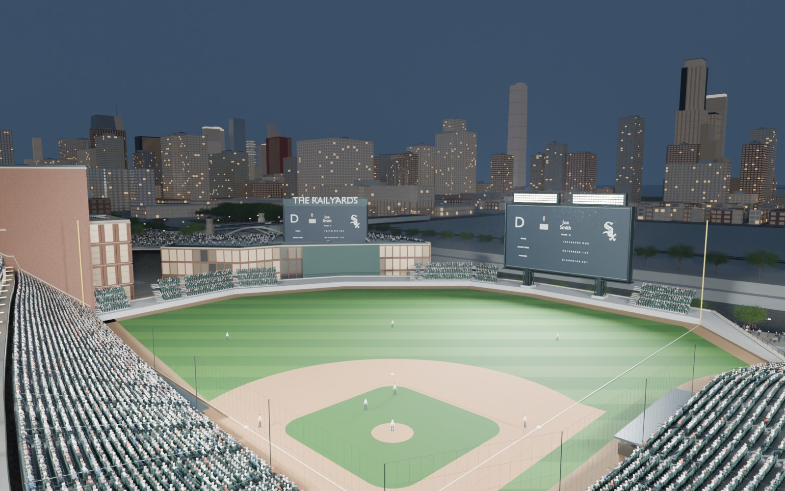
Press-box level, night. The bowl under the floodlights with the Loop lit beyond; the suite glazing between tiers and the concourse lamps are new in V7." loading="lazy">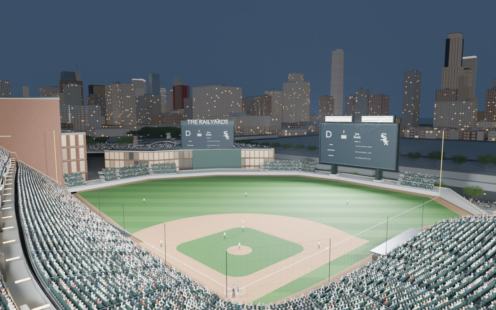
Home upper deck." loading="lazy">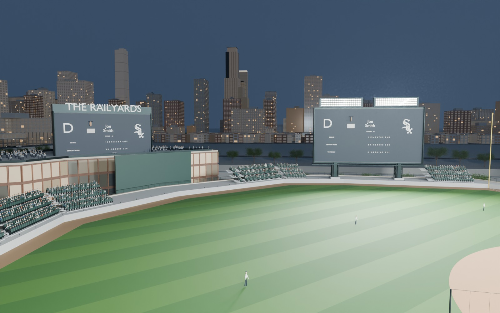
Third-base seats. The right-field board and the Museum Park towers." loading="lazy">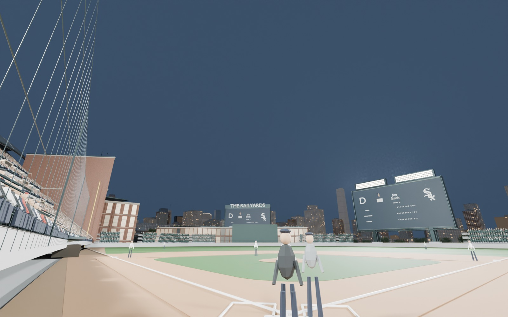
Behind the plate." loading="lazy">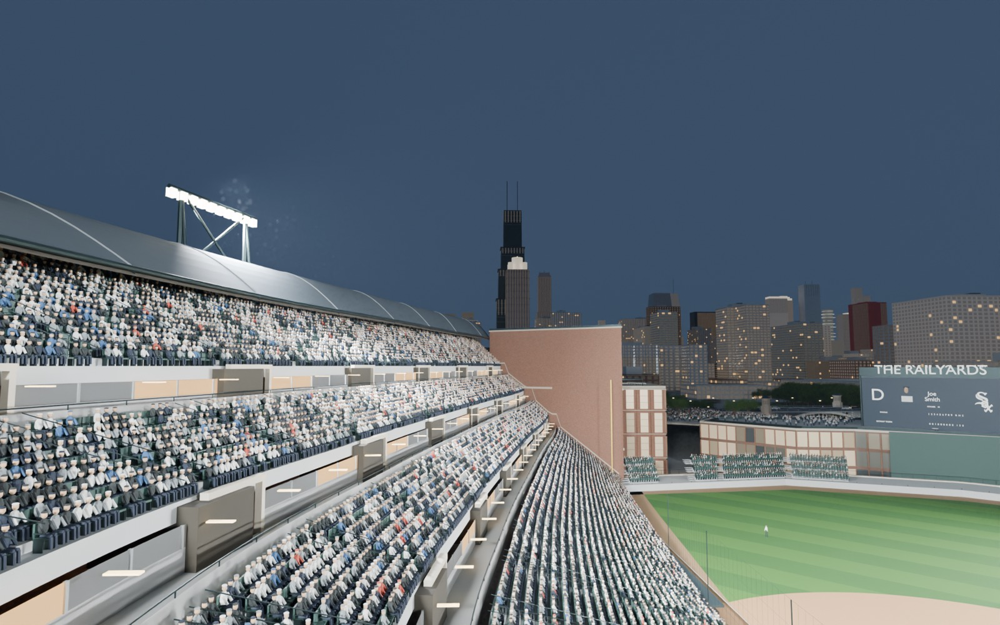
Left field. Willis and 311 South Wacker's crown lit." loading="lazy">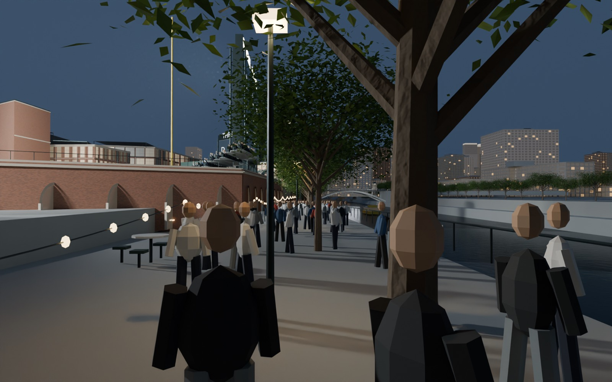
Lower riverwalk. Festoon lights under the arcade, the bridge ahead." loading="lazy">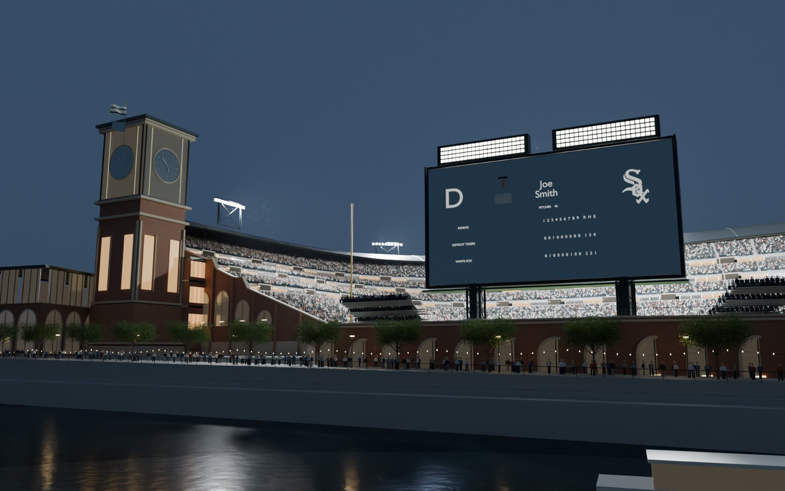
East bank. Clock tower, board and arcade across the water." loading="lazy">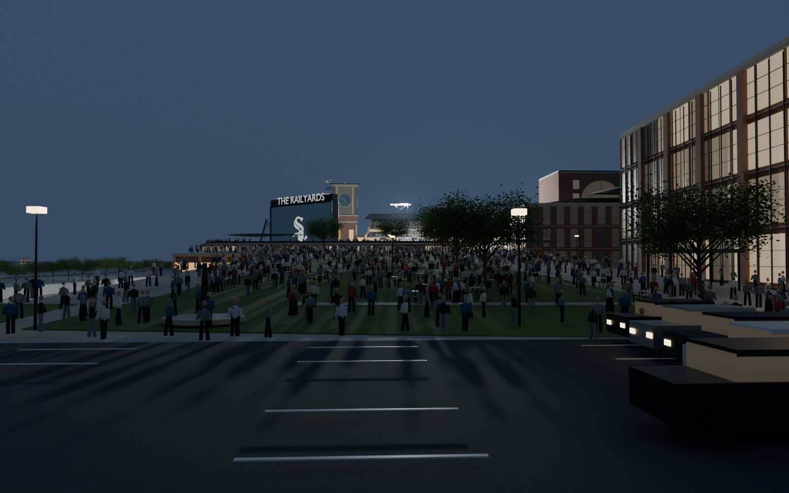
Roosevelt Road. Over the park to the outfield entry." loading="lazy">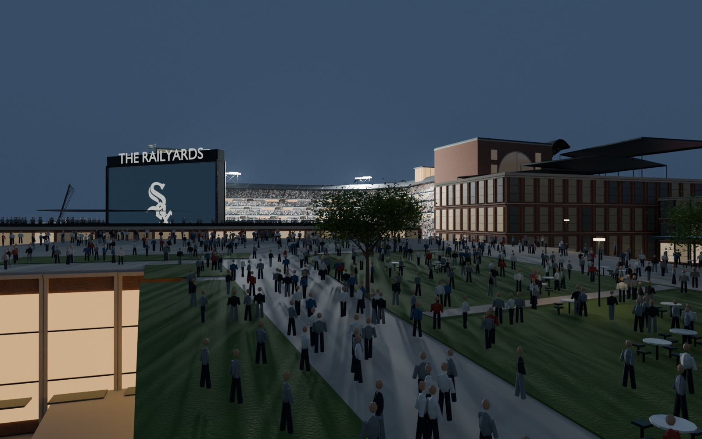
Park deck." loading="lazy">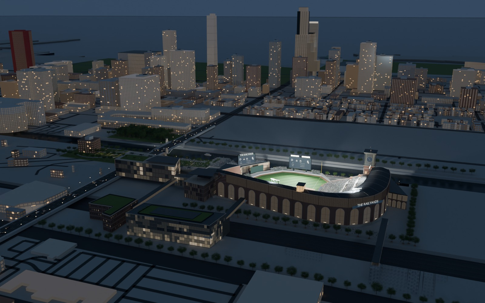
From the west. The district after dark: stadium, park, river, the near South Loop and the lake." loading="lazy">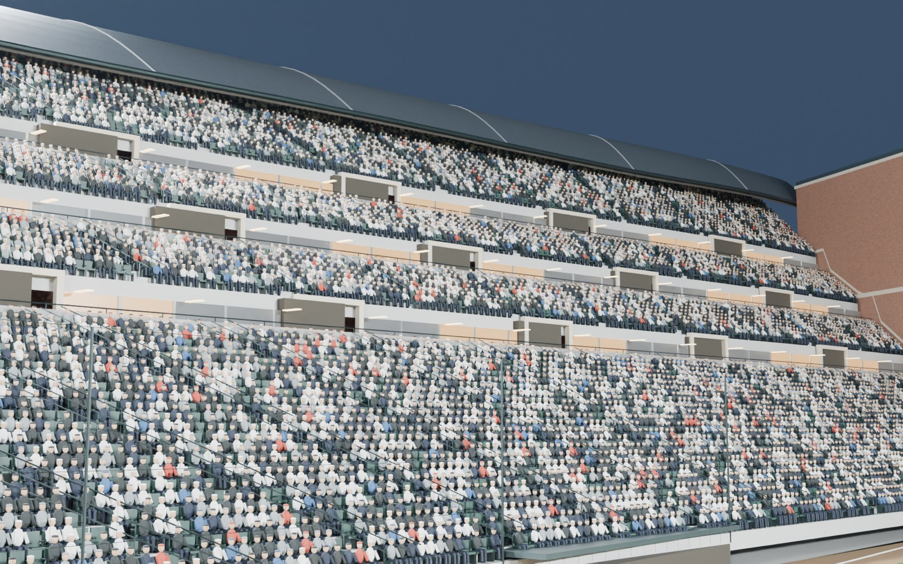
Concourses, night. Suite glazing and soffit lamps between the tiers." loading="lazy">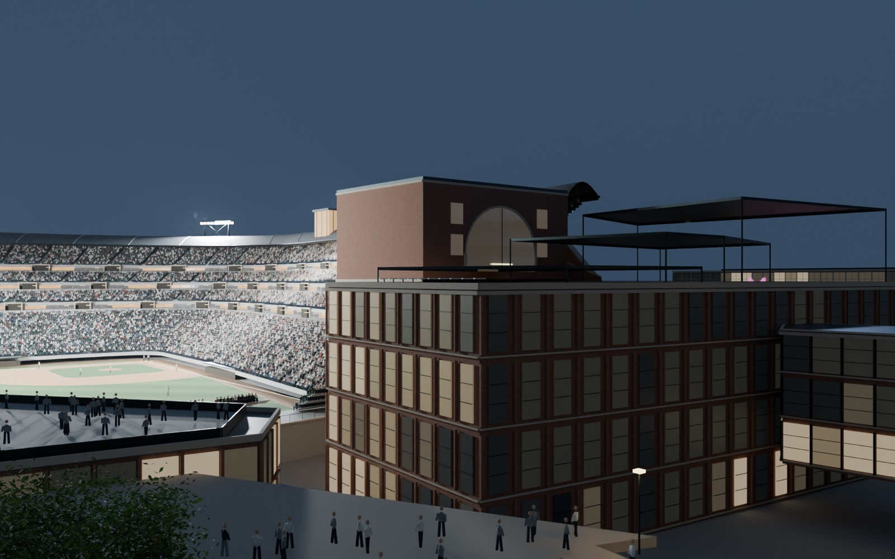
Left-field gatehouse, night." loading="lazy">